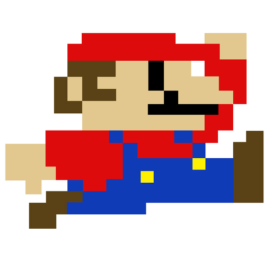

Historia
Mario es un personaje ficticio creado por la empresa japonesa Nintendo. Apareció por primera vez en 1981 en el videojuego Donkey Kong, donde originalmente era conocido como “Jumpman”. Fue diseñado por Shigeru Miyamoto y, debido a su popularidad, posteriormente fue renombrado como Mario. Desde entonces, se convirtió en el personaje principal de la franquicia Super Mario Bros, una de las series más exitosas en la historia de los videojuegos.
Dentro de la historia de los juegos, Mario es un fontanero italiano que vive en el Reino Champiñón. Su misión principal consiste en rescatar a la Princesa Peach del villano Bowser, quien constantemente intenta apoderarse del reino. A lo largo de los años, Mario ha participado en múltiples aventuras, enfrentando diferentes enemigos y superando diversos desafíos. Gracias a su carisma y relevancia cultural, se ha convertido en uno de los personajes más reconocidos e influyentes del entretenimiento digital a nivel mundial.
Información
Habilidades y características
- Gran habilidad para saltar grandes alturas.
- Uso de power-ups como la Flor de Fuego y la Super Estrella.
- Capacidad de derrotar enemigos pisándolos.
- Experto en rescatar a la Princesa Peach.
- Valentía y espíritu heroico.
Top 3 momentos más icónicos
- Su primera aparición en Donkey Kong (1981).
- El lanzamiento de Super Mario Bros en 1985.
- La transición al mundo 3D con Super Mario 64.
Ficha técnica
| Dato | Información |
|---|---|
| Edad | 38 años aprox (como personaje ficticio desde 1981) |
| Peso | 32 kg |
| Estatura | 1.55 m |
| Primera aparición | Donkey Kong (1981) |
| Debilidades | Caídas, enemigos grandes sin power-ups |
| Alias | Jumpman |